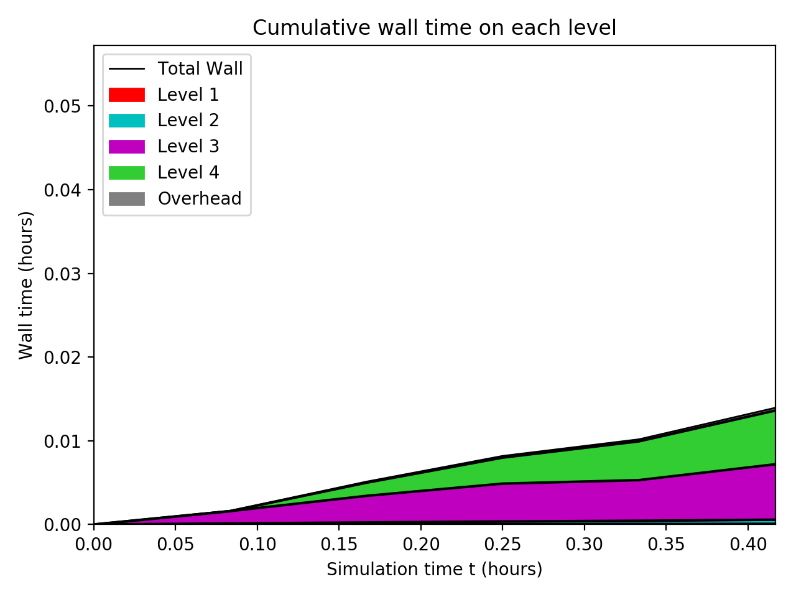
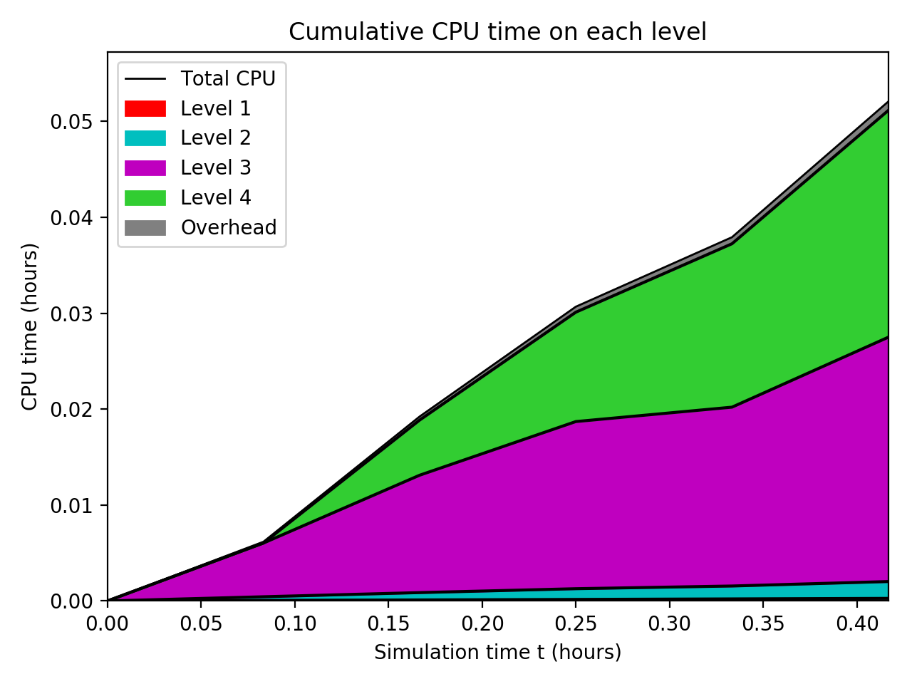
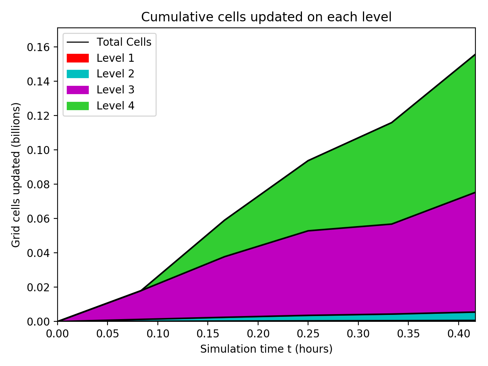
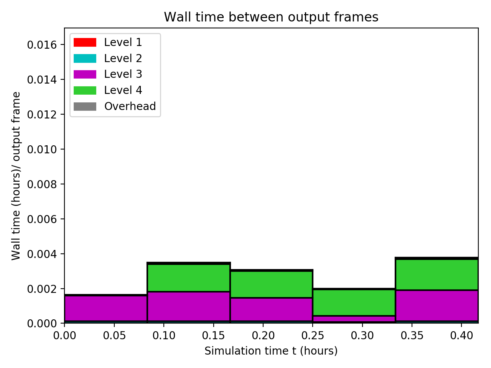
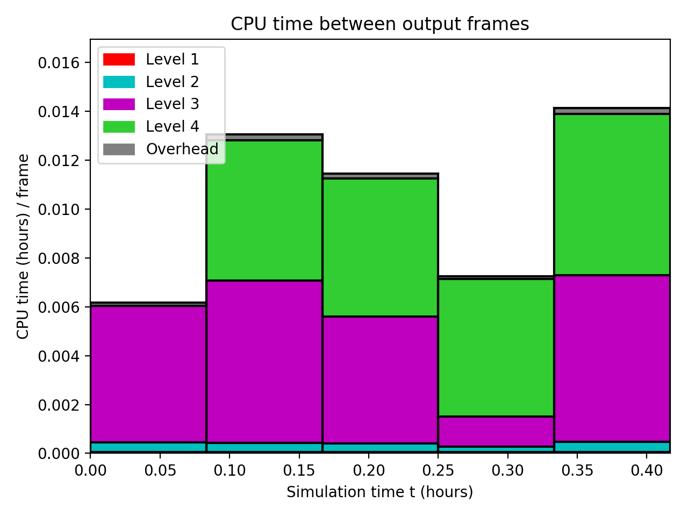
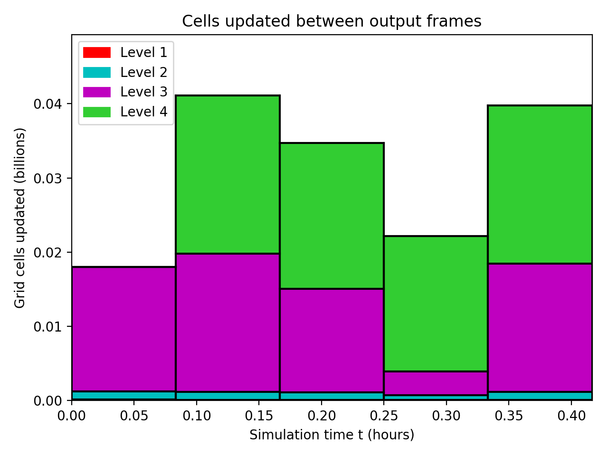
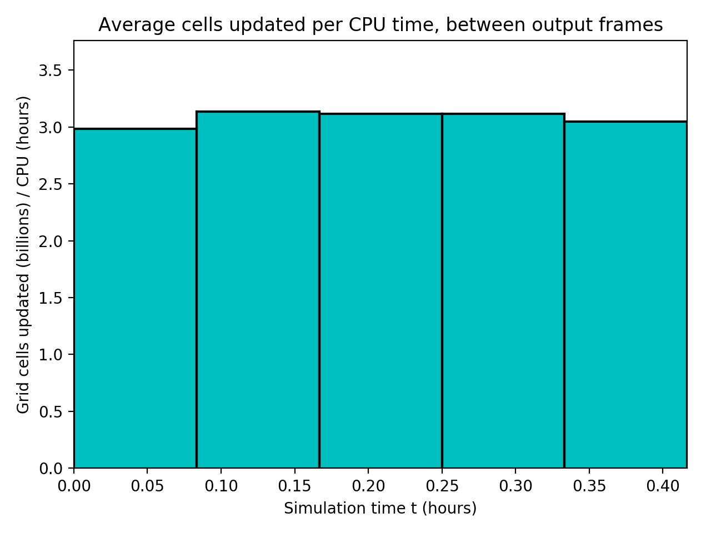

Datetime: 2019-10-22 18:11 From: /Users/rjl/git/clawpack/new_features_for_v5.7.0/examples/geoclaw_test1/_output_1
============================== Timing Data ==============================
Integration Time (stepgrid + BC + overhead)
Level Wall Time (seconds) CPU Time (seconds) Total Cell Updates
1 0.277 0.974 0.636E+06
2 1.788 6.316 0.490E+07
3 23.829 91.662 0.697E+08
4 23.108 85.086 0.804E+08
total 49.003 184.038 0.156E+09
All levels:
stepgrid 48.071 181.089
BC/ghost cells 0.857 2.862
Regridding 0.776 2.489
Output (valout) 0.064 0.038
Total time: 50.180 187.330
Using 4 thread(s)
Note: The CPU times are summed over all threads.
Total time includes more than the subroutines listed above
Note: timings are also recorded for each output step
in the file timing.csv.
clock_rate = 1000000000 per second, count_max = 9223372036854775807
clock_start = 1571786804262149000, clock_finish = 1571786854442133000
=========================================================================
  
  
